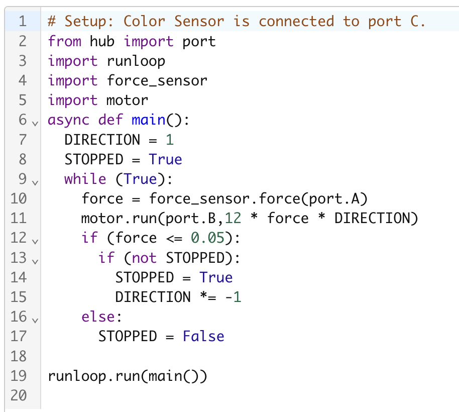

Here is some basic code that allowed my SPIKE Prime Hub to read data from a force sensor in order to ramp the speed of the motor based on the amount of force applied. One little change that I made was swapping the direction of the motor as soon as the force sensor is released (this will help me with the astronaut tool project).